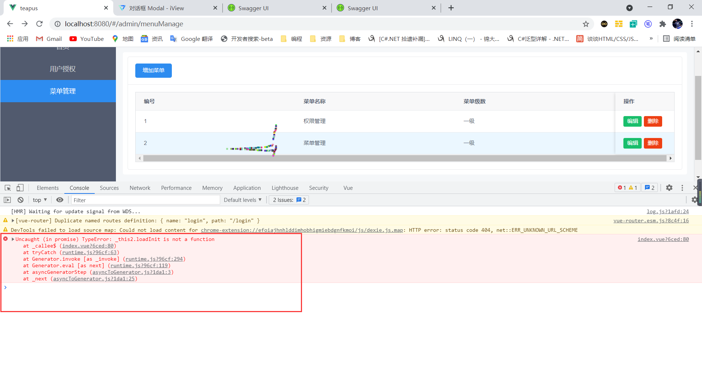

有一个小的功能在 iview 的 table 组件中。点击删除后弹出一个模态框，接着点击确定后删除数据。
在用 render 函数时遇到一个小的问题
# 初始化页面数据
| async loadInit() { |
| var result = await fetch(method.GET, "https://localhost:5001/api/Query"); |
| this.data = result.data; |
| }, |
# Render 函数中删除数据
| on: { |
| click: async () => { |
| this.$Modal.confirm({ |
| title: "确定删除吗？", |
| async onOk() { |
| var { code } = await fetch( |
| method.DELETE, |
| "https://localhost:5001/api/Delete", |
| { id: row.id } |
| ); |
| if (code == 1) { |
| this.loadInit(); |
| this.$Message.success("删除成功"); |
| } |
| }, |
| }); |
| }, |
| }, |

# 将 Click 方法修改
| on: { |
| click: async () => { |
| this.$Modal.confirm({ |
| |
| let loadInit = this.loadInit; |
| title: "确定删除吗？", |
| async onOk() { |
| var { code } = await fetch( |
| method.DELETE, |
| "https://localhost:5001/api/Delete", |
| { id: row.id } |
| ); |
| if (code == 1) { |
| loadInit(); |
| this.$Message.success("删除成功"); |
| } |
| }, |
| }); |
| }, |
| }, |